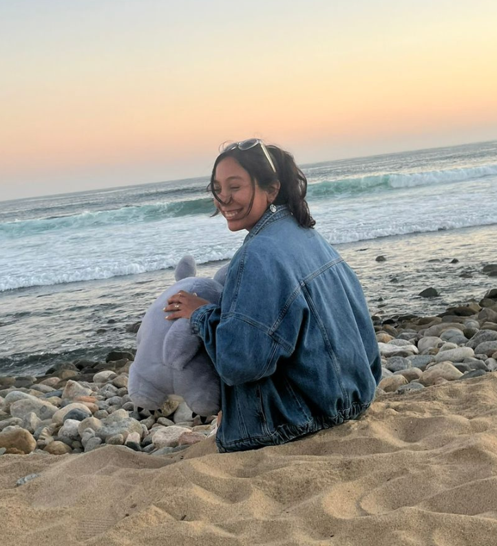

Un portafolio creativo con alma editorial.
Soy Ximena Jardón, licenciada en Turismo y creadora visual apasionada por la fotografía, la escritura y el diseño de historias que conectan con las personas.
+4
Proyectos destacados
Visual
Narrativa y estética
Story
Ideas con intención

Portfolio creativo
Ximena Jardón · Visual storyteller
Sobre mí
Una mirada cálida, curiosa y muy visual.
Me gusta convertir ideas, imágenes y palabras en piezas que transmitan emoción. Mi trabajo mezcla comunicación, creatividad y sensibilidad para construir proyectos con identidad propia.
Enfoque
Fotografía + storytelling
Estilo
Suave, editorial y artesanal
Lo que hago
Contenido visual, comunicación digital y experiencias con intención.
Habilidades
Lo que mejor hago
Una mezcla de estrategia, sensibilidad visual y ejecución creativa para proyectos que necesitan presencia y personalidad.
Redes sociales
Gestión de contenidos con foco en comunidad y consistencia visual.
Análisis digital
Lectura de resultados y decisiones visuales más estratégicas.
Stories y reels
Programación y publicación con ritmo, intención y estética.
Campañas
Ideación y ejecución de campañas de contenido atractivas.
Storytelling
Textos con sensibilidad, claridad y personalidad narrativa.
Contacto
¿Te gustó el portafolio?
Si quieres colaborar, contratar contenido visual o platicar sobre ideas creativas, puedes escribirme directamente.
Datos de contacto